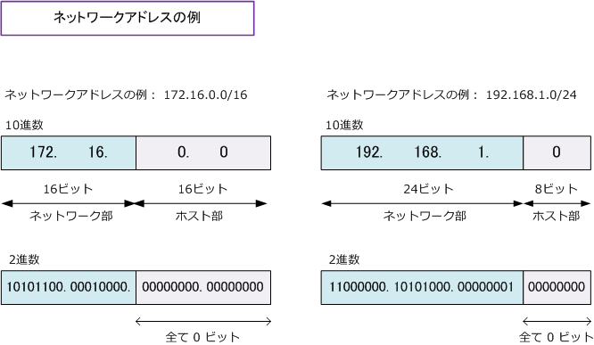
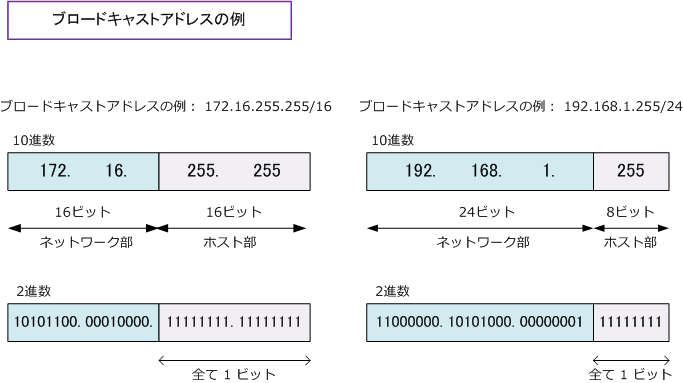
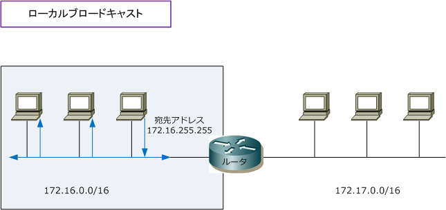
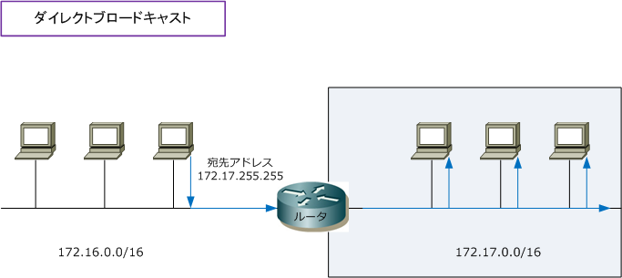

IP address - Network Address / Broadcast Address
予約済みIPアドレス
IPアドレスには、コンピュータなどのホストに割り当てられない、特別な用途で使用するものがあります。 具体的に、ネットワークアドレス、ブロードキャストアドレス、ループバックアドレスが予約済みIPです。 ネットワークアドレスは、ホスト部の2進数のビットが全て 0 のアドレスです。ネットワークアドレスは ネットワーク自体を指すアドレスとして使用されます。以下はネットワークアドレスの例を示しています。

ブロードキャストアドレスはホスト部のビットが全て 1 のアドレスです。ブロードキャストアドレスは あるセグメントに接続されている全てのホストにパケットを送信するためのアドレスとして使用されます。

ループバックアドレスですが、ネットワークアドレスとしても使用禁止とされているネットワークの 127.0.0.0/8のネットワークで、127.0.0.1のアドレスのことをループバックアドレスと呼んでいます。 ループバックアドレスは、自分自身を示す仮想的なIPアドレスです。例えば、パソコン上のコマンド プロンプトで ping 127.0.0.1 と実行し応答があれば、TCP/IPが正常に動作している事を意味します。
※ 紛らわしい例として「172.16.1.0/16」は一見ネットワークアドレスのように見えますが、ホスト部のビットが全て 0 では ないことから、このIPアドレスはネットワークアドレスではありません。従って、PCにこのIPアドレスを割り当てることが可能。
ブロードキャストアドレスの種類
ブロードキャストアドレスにはローカルブロードキャストアドレスとダイレクトブロードキャストアドレス の2種類があります。ローカルブロードキャストは、自身が接続しているネットワークのブロードキャストの ことです。例えば 172.16.0.0/16 のローカルブロードキャストアドレスは「172.16.255.255」となります。

ダイレクトブロードキャストアドレスは自身が接続していないネットワークへのブロードキャストのことです。 例えば、自身は「172.16.0.0/16」のセグメントに接続していながらも、例えば「172.17.0.0/16」の異なる セグメントに対し送出するブロードキャストのことです。以下では「172.17.255.255」がそれに該当します。

ダイレクトブロードキャストについては、セキュリティ上の問題があることから、IPネットワークにおける 経路制御装置であるルータにおいて、転送されないようにデフォルトで設定されているのが一般的です。 Cisco製品のルータでも、IOS12.0以降はデフォルトではダイレクトブロードキャストを転送しないように 設定されています。ただし、リモートネットワークなどから WoL (Wake on LAN) パケットを転送したい 場合などは、ダイレクトブロードキャストを転送するようにCiscoルータではI/F上で以下の通り設定します。
Cisco(config-if)# ip directed-broadcast
※ ちなみに、宛先IPアドレス"255.255.255.255"のブロードキャストは「リミテッドブロードキャストアドレス」と言います。